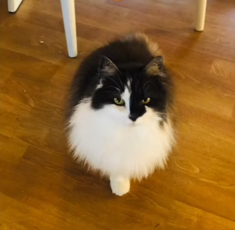
angry.png
angry2.png
big.png
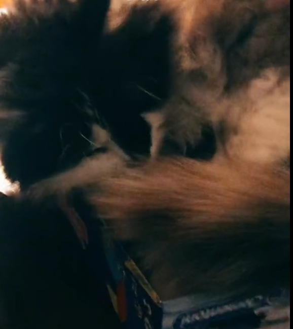
box.png
camera.png
chair.png
chair2.png
christmas.png
cool.png
cool2.png
cool3.png
cool4.png
coolsit.png
coolsit2.png
cute.png
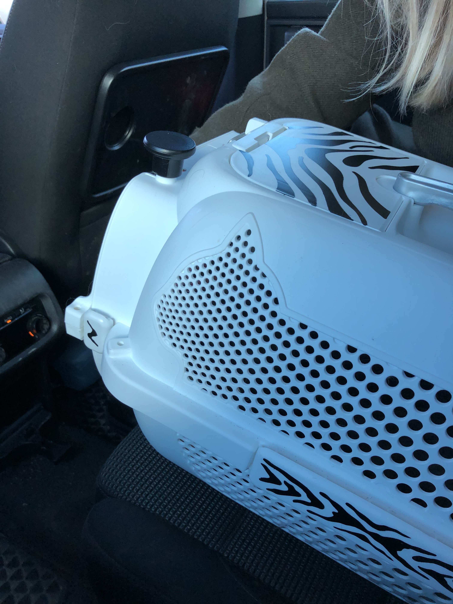
day_she_died.jpg
 day_before_death.jpg
day_before_death.jpg
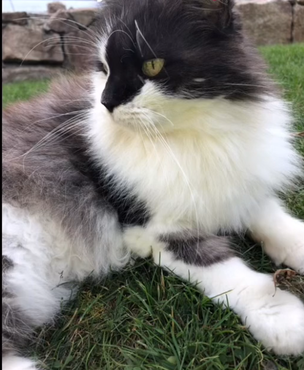
grass2.png
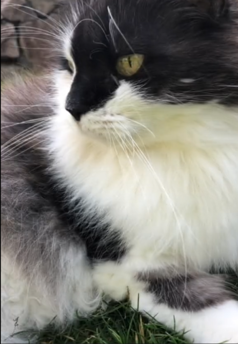
grass3.png
greyscale.png
grumpy.png
hand.png
leaf.png
looking_up.png
looking_up_2.png
mad.png
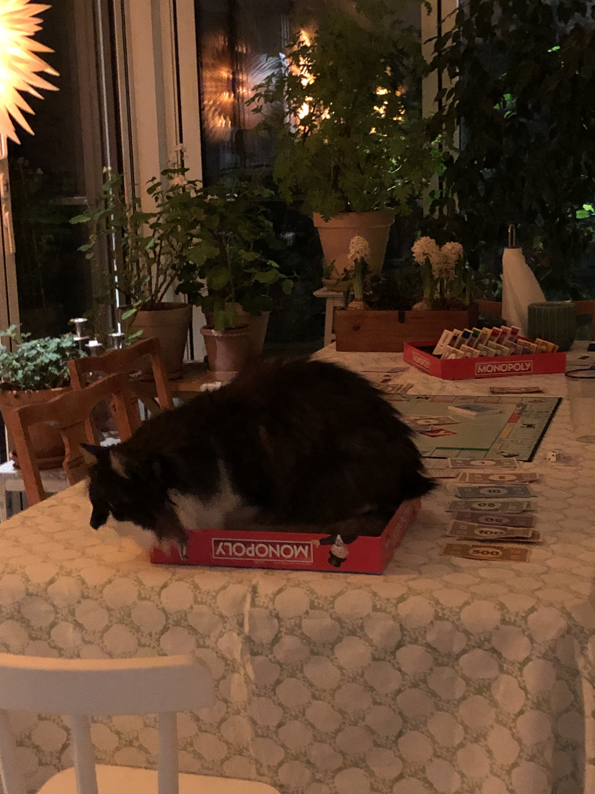
monopoly.jpg
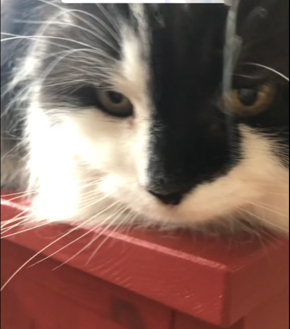
randompic.jpg
randompic2.jpg
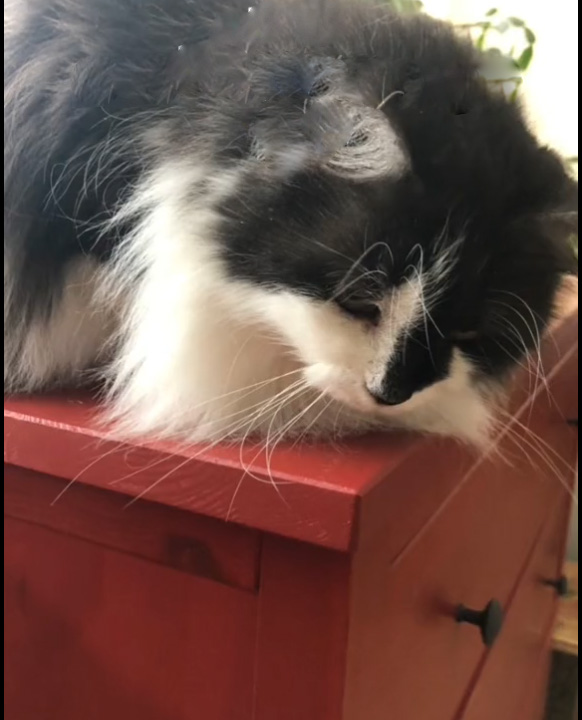
randompic3.jpg
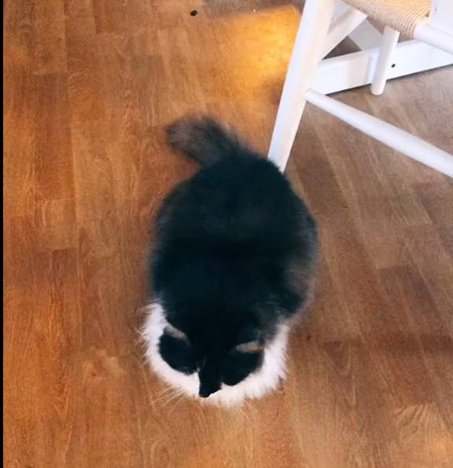
sit.png
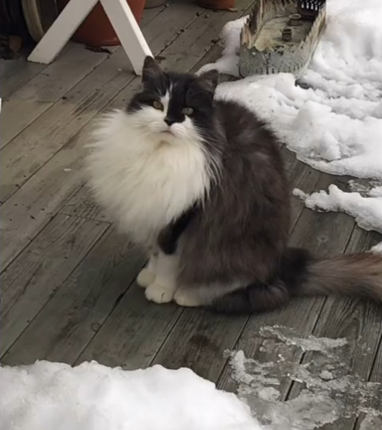
snow.png
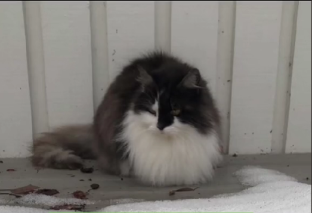
snow2.png
staring.png
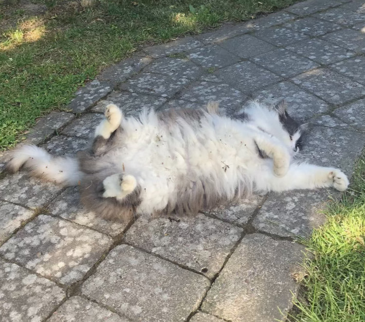
summer.jpg
upside_down.png
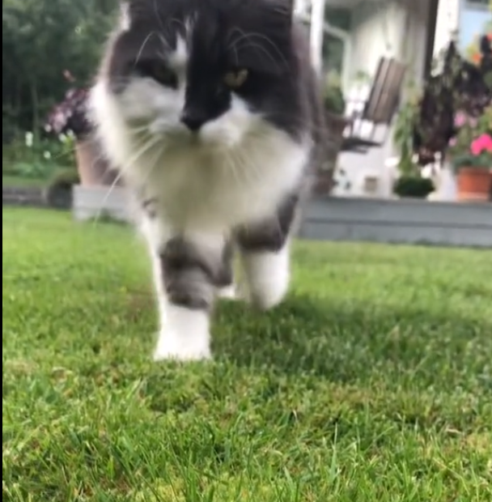
walking.png
walking_distance.png
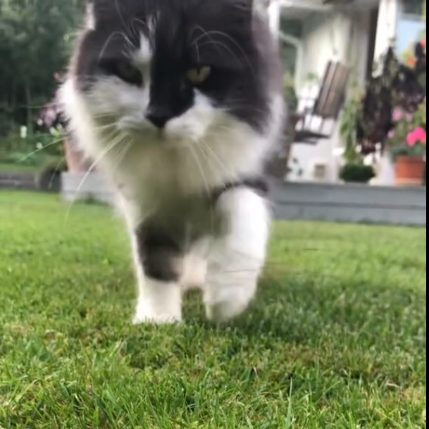
walkingclose.png